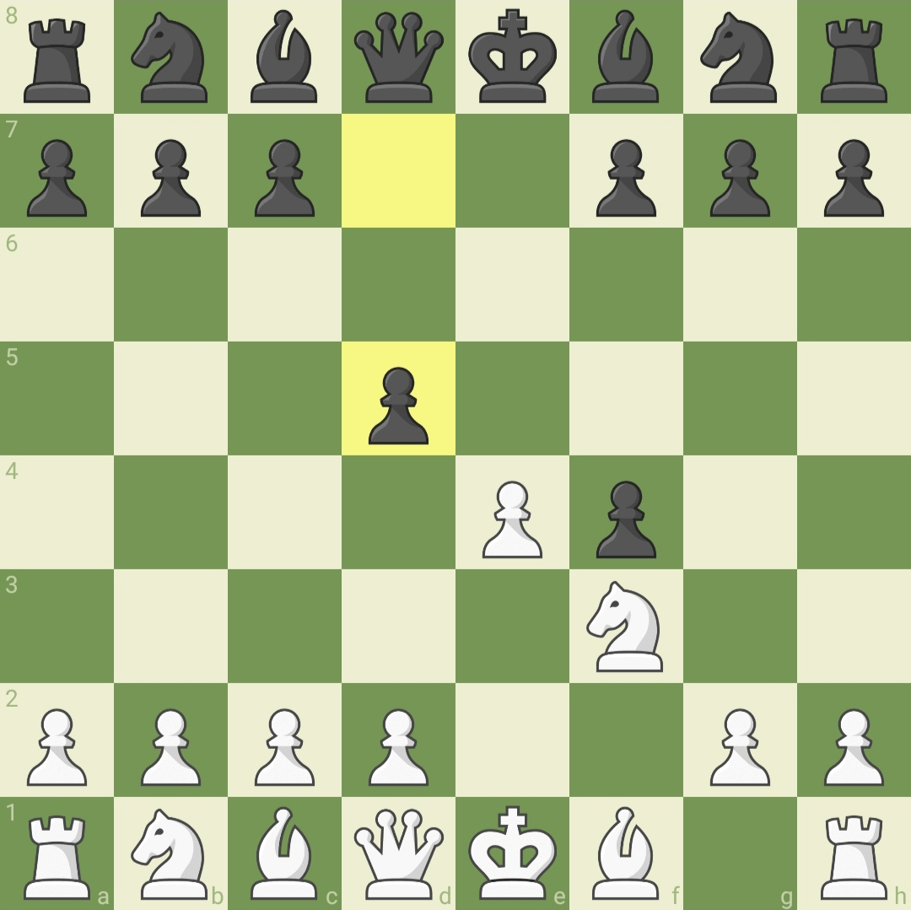

French Defense
The French Defense is a classic chess opening that arises after the initial moves 1.e4 e6. Named for its association with French chess players in the 19th century, this defense is characterized by the pawn structure created by Black's first move, which establishes a solid pawn chain with pawns on d7 and e6. The French Defense often leads to closed positions, where pawn structures play a crucial role in determining the strategic nature of the game. The central pawn structure can result in a pawn tension that leads to complex and strategic battles. One of the key variations is the Classical French, where Black aims to control the center with pieces rather than immediately contesting it with pawns. The French Defense has been employed by many world-class players, including former World Champions Emanuel Lasker and Anatoly Karpov, showcasing its resilience and strategic depth. While it can sometimes lead to a solid and closed position, the French Defense offers a rich field for tactical skirmishes and strategic maneuvering.The French Defense is known for its unique pawn structure and the potential for asymmetrical pawn formations. One of the distinctive features is the backward pawn on d7, which can become a target for both sides. Black's strategy often involves undermining White's central pawn structure with moves like c5 and f6, aiming to create counterplay on the queenside and in the center.There are several variations within the French Defense, such as the Winawer, Tarrasch, and Classical variations, each offering players a different set of plans and ideas. The Winawer, for instance, introduces early pawn breaks and can lead to sharp and dynamic positions, while the Tarrasch focuses on solid pawn structures and strategic maneuvering.

King's Gambit
The King's Gambit is a historic and aggressive chess opening that originates from the 19th century. It begins with the moves 1.e4 e5 2.f4, where White sacrifices the f4-pawn to rapidly open up lines for attacking and controlling the center. The King's Gambit is a departure from more solid and traditional openings, and it often leads to sharp and tactical positions.
The gambit offers White the initiative and the chance to launch a rapid and direct assault on the black king. While the King's Gambit has been played by many leading players throughout history, including greats like Paul Morphy and Bobby Fischer, it has experienced periods of popularity and decline due to its inherent risks and the advent of defensive techniques that can counter White's aggressive intentions.
Black has several responses to the King's Gambit, with the most common being 2...exf4, accepting the gambit. From there, Black can choose different setups, such as the Classical Defense with 3...Bc5 or the Modern Defense with 3...d5. Proper defense by Black can lead to a solid position, and the game can transition into a variety of complex and dynamic middlegame scenarios.
The King's Gambit is not as frequently played at the highest levels of chess today due to the potential risks involved for White, but it remains a fascinating and combative opening that can catch unprepared opponents off guard.Players who enjoy sharp, tactical battles and a willingness to embrace imbalances often find the King's Gambit to be an exciting choice.The King's Gambit is a testament to the romantic era of chess when bold sacrifices and aggressive play were highly valued. While the opening can lead to thrilling tactical fireworks, it also demands a keen understanding of dynamic pawn structures and sharp calculations.